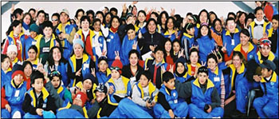

Quienes Somos
El objetivo general de la Fundación es contribuir con el tratamiento integral de los niños con cáncer y leucemia del país (Plan AUGE y GES), ayudando a su desarrollo integral, mejorando su calidad de vida y fortaleciendo su integración social y familiar.
En el año 1992 se creó la Fundación Oncológica Las Condes, atendiendo a niños y adultos con cáncer. En el año 2000 se modifican sus estatutos según el decreto N° 994 publicado en el Diario Oficial N° 36817, para atender solamente a niños con cáncer.
Nuestros Objetivos
La Fundación Niño y Cáncer es una entidad sin fines de lucro que nació para ser un importante apoyo en el tratamiento integral de los niños con cáncer o leucemia atendidos en el Sistema Público del país (Plan AUGE y GES) mejorando su calidad de vida y fortaleciendo su integración social y familiar.
Sus objetivos principales son:
- Apoyar el tratamiento de la enfermedad
- Generamos espacios de recreación y mejoramos la calidad de vida del niño durante y después de su tratamiento
- Rehabilitamos al niño tratado y posteriormente lo integramos a la sociedad (Becas de Estudios)
- Damos apoyo social y solidario a la familia del niño (Departamentos de Acogida, almuerzo para padres de niños hospitalizados, Cenas de Navidad, etc.)
Necesitamos la colaboración solidaria de la comunidad, para lograr transformar la cara triste de la enfermedad en una cara feliz con esperanzas para estos pequeños que luchan día a día por su vida.
Principales Actividades
Programas Nacionales con cobertura nacional:
La fundación está convencida que para derrotar el cáncer no sólo hay que preocuparse de curar el cuerpo de los pacientes. El espíritu también se ve afectado y para salir adelante es esencial querer curarse. Por esta razón, son muy importantes los programas recreativos, los cuales ayudan a superar los sufrimientos y mantener vivo el deseo de curarse
Montaña de la Alegría - Dividida en dos etapas:
|
| Primera Etapa |
Participan 10 niños/jóvenes,chilenosy extranjeros,
amputados de una extremidad inferior como secuela de su enfermedad.
El objetivo es demostrarles a los niños/jóvenes participantes que
su impedimento físico no los limita para plantearse desafíos como aprender
esquiar y con optimismo y fuerza lograran todos los objetivos que se
propongan en su vida. |
| Segunda Etapa |
Participan 10 niños/jóvenes,chilenosy extranjeros,
amputados de una extremidad inferior como secuela de su enfermedad.
El objetivo es demostrarles a los niños/jóvenes participantes que
su impedimento físico no los limita para plantearse desafíos como aprender
esquiar y con optimismo y fuerza lograran todos los objetivos que se
propongan en su vida. |
Torneo de Futbolito y Porristas
En esta actividad participan los niños tratados de cáncer junto a su familia de los hospitales del área metropolitana. (San Borja Arriaran, Sotero del Río, Exequiel González, Roberto del Río, Calvo Mackenna y San Juan de Dios). Para estos jóvenes y sus familias es un día de fiesta.
